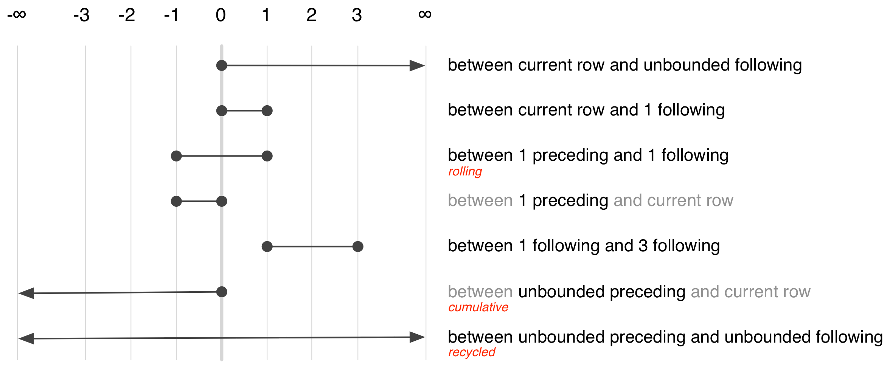

There are two components to dplyr’s SQL translation system:
translation of vector expressions like x * y + 10
translation of whole verbs like mutate() or summarise()
To explore them, you’ll need to load both dbplyr and dplyr:
library(dbplyr)
library(dplyr)Most filtering, mutating or summarising operations only perform simple mathematical operations. These operations are very similar between R and SQL, so they’re easy to translate. To see what’s happening yourself, you can use translate_sql(). The basic techniques that underlie the implementation of translate_sql() are described in “Advanced R”. translate_sql() is built on top of R’s parsing engine and has been carefully designed to generate correct SQL. It also protects you against SQL injection attacks by correctly escaping the strings and variable names needed by the database that you’re connecting to.
The following examples work through some of the basic differences between R and SQL.
" and ' mean different things
# In SQLite variable names are escaped by double quotes:
translate_sql(x)
#> <SQL> "x"
# And strings are escaped by single quotes
translate_sql("x")
#> <SQL> 'x'Many functions have slightly different names
translate_sql(x == 1 && (y < 2 || z > 3))
#> <SQL> "x" = 1.0 AND ("y" < 2.0 OR "z" > 3.0)
translate_sql(x ^ 2 < 10)
#> <SQL> POWER("x", 2.0) < 10.0
translate_sql(x %% 2 == 10)
#> <SQL> "x" % 2.0 = 10.0And some functions have different argument orders:
translate_sql(substr(x, 5, 10))
#> <SQL> substr("x", 5, 6)
translate_sql(log(x, 10))
#> <SQL> log(10.0, "x")R and SQL have different defaults for integers and reals. In R, 1 is a real, and 1L is an integer. In SQL, 1 is an integer, and 1.0 is a real
translate_sql(1)
#> <SQL> 1.0
translate_sql(1L)
#> <SQL> 1If statements are translated into a case statement:
translate_sql(if (x > 5) "big" else "small")
#> <SQL> CASE WHEN ("x" > 5.0) THEN ('big') ELSE ('small') ENDdplyr knows how to convert the following R functions to SQL:
+, -, *, /, %%, ^
abs, acos, acosh, asin, asinh, atan, atan2, atanh, ceiling, cos, cosh, cot, coth, exp, floor, log, log10, round, sign, sin, sinh, sqrt, tan, tanh
<, <=, !=, >=, >, ==, %in%
&, &&, |, ||, !, xor
mean, sum, min, max, sd, var
tolower, toupper, trimws, nchar, substr
as.numeric, as.integer, as.character
Perfect translation is not possible because databases don’t have all the functions that R does. The goal of dplyr is to provide a semantic rather than a literal translation: what you mean rather than what is done. In fact, even for functions that exist both in databases and R, you shouldn’t expect results to be identical; database programmers have different priorities than R core programmers. For example, in R in order to get a higher level of numerical accuracy, mean() loops through the data twice. R’s mean() also provides a trim option for computing trimmed means; this is something that databases do not provide. Databases automatically drop NULLs (their equivalent of missing values) whereas in R you have to ask nicely. This means the essence of simple calls like mean(x) will be translated accurately, but more complicated calls like mean(x, trim = 0.5, na.rm = TRUE) will raise an error:
translate_sql(mean(x, na.rm = TRUE))
#> Error in mean(x, na.rm = TRUE): unused argument (na.rm = TRUE)
translate_sql(mean(x, trim = 0.1))
#> Error in mean(x, trim = 0.1): unused argument (trim = 0.1)translate_sql() takes an optional con parameter. If not supplied, this causes dplyr to generate (approximately) SQL-92 compliant SQL. If supplied, dplyr uses sql_translate_env() to look up a custom environment which makes it possible for different databases to generate slightly different SQL: see vignette("new-backend") for more details.
Any function that dplyr doesn’t know how to convert is left as is. This means that database functions that are not covered by dplyr can be used directly via translate_sql(). Here a couple of examples that will work with SQLite:
translate_sql(glob(x, y))
#> <SQL> GLOB("x", "y")
translate_sql(x %like% "ab%")
#> <SQL> "x" LIKE 'ab%'Things get a little trickier with window functions, because SQL’s window functions are considerably more expressive than the specific variants provided by base R or dplyr. They have the form [expression] OVER ([partition clause] [order clause] [frame_clause]):
The expression is a combination of variable names and window functions. Support for window functions varies from database to database, but most support the ranking functions, lead, lag, nth, first, last, count, min, max, sum, avg and stddev.
The partition clause specifies how the window function is broken down over groups. It plays an analogous role to GROUP BY for aggregate functions, and group_by() in dplyr. It is possible for different window functions to be partitioned into different groups, but not all databases support it, and neither does dplyr.
The order clause controls the ordering (when it makes a difference). This is important for the ranking functions since it specifies which variables to rank by, but it’s also needed for cumulative functions and lead. Whenever you’re thinking about before and after in SQL, you must always tell it which variable defines the order. If the order clause is missing when needed, some databases fail with an error message while others return non-deterministic results.
The frame clause defines which rows, or frame, that are passed to the window function, describing which rows (relative to the current row) should be included. The frame clause provides two offsets which determine the start and end of frame. There are three special values: -Inf means to include all preceeding rows (in SQL, “unbounded preceding”), 0 means the current row (“current row”), and Inf means all following rows (“unbounded following)”. The complete set of options is comprehensive, but fairly confusing, and is summarised visually below.
knitr::include_graphics("windows.png", dpi = 200)
Of the many possible specifications, there are only three that commonly used. They select between aggregation variants:
Recycled: BETWEEN UNBOUND PRECEEDING AND UNBOUND FOLLOWING
Cumulative: BETWEEN UNBOUND PRECEEDING AND CURRENT ROW
Rolling: BETWEEN 2 PRECEEDING AND 2 FOLLOWING
dplyr generates the frame clause based on whether your using a recycled aggregate or a cumulative aggregate.
To see how individual window functions are translated to SQL, we can again use translate_sql():
translate_sql(mean(G))
#> <SQL> avg("G") OVER ()
translate_sql(rank(G))
#> <SQL> rank() OVER (ORDER BY "G")
translate_sql(ntile(G, 2))
#> <SQL> NTILE(2) OVER (ORDER BY "G")
translate_sql(lag(G))
#> <SQL> LAG("G", 1, NULL) OVER ()If the tbl has been grouped or arranged previously in the pipeline, then dplyr will use that information to set the “partition by” and “order by” clauses. For interactive exploration, you can achieve the same effect by setting the vars_group and vars_order arguments to translate_sql()
translate_sql(cummean(G), vars_order = "year")
#> <SQL> mean("G") OVER (ORDER BY "year" ROWS UNBOUNDED PRECEDING)
translate_sql(rank(), vars_group = "ID")
#> <SQL> rank() OVER (PARTITION BY "ID")There are some challenges when translating window functions between R and SQL, because dplyr tries to keep the window functions as similar as possible to both the existing R analogues and to the SQL functions. This means that there are three ways to control the order clause depending on which window function you’re using:
For ranking functions, the ordering variable is the first argument: rank(x), ntile(y, 2). If omitted or NULL, will use the default ordering associated with the tbl (as set by arrange()).
Accumulating aggregates only take a single argument (the vector to aggregate). To control ordering, use order_by().
Aggregates implemented in dplyr (lead, lag, nth_value, first_value, last_value) have an order_by argument. Supply it to override the default ordering.
The three options are illustrated in the snippet below:
mutate(players,
min_rank(yearID),
order_by(yearID, cumsum(G)),
lead(G, order_by = yearID)
)Currently there is no way to order by multiple variables, except by setting the default ordering with arrange(). This will be added in a future release.
All dplyr verbs generate a SELECT statement. To demonstrate we’ll make a temporary database with a couple of tables
con <- DBI::dbConnect(RSQLite::SQLite(), ":memory:")
flights <- copy_to(con, nycflights13::flights)
airports <- copy_to(con, nycflights13::airports)select() and mutate() modify the SELECT clause:
flights %>%
select(contains("delay")) %>%
show_query()
#> <SQL>
#> SELECT `dep_delay` AS `dep_delay`, `arr_delay` AS `arr_delay`
#> FROM `nycflights13::flights`
flights %>%
select(distance, air_time) %>%
mutate(speed = distance / (air_time / 60)) %>%
show_query()
#> <SQL>
#> SELECT `distance`, `air_time`, `distance` / (`air_time` / 60.0) AS `speed`
#> FROM (SELECT `distance` AS `distance`, `air_time` AS `air_time`
#> FROM `nycflights13::flights`)(As you can see here, the generated SQL isn’t always as minimal as you might generate by hand.)
filter() generates a WHERE clause:
flights %>%
filter(month == 1, day == 1) %>%
show_query()
#> <SQL>
#> SELECT *
#> FROM `nycflights13::flights`
#> WHERE ((`month` = 1.0) AND (`day` = 1.0))arrange() generates an ORDER BY clause:
flights %>%
arrange(carrier, desc(arr_delay)) %>%
show_query()
#> <SQL>
#> SELECT *
#> FROM `nycflights13::flights`
#> ORDER BY `carrier`, `arr_delay` DESCsummarise() and group_by() work together to generate a GROUP BY clause:
flights %>%
group_by(month, day) %>%
summarise(delay = mean(dep_delay)) %>%
show_query()
#> <SQL>
#> SELECT `month`, `day`, AVG(`dep_delay`) AS `delay`
#> FROM `nycflights13::flights`
#> GROUP BY `month`, `day`| R | SQL |
|---|---|
inner_join() |
SELECT * FROM x JOIN y ON x.a = y.a |
left_join() |
SELECT * FROM x LEFT JOIN y ON x.a = y.a |
right_join() |
SELECT * FROM x RIGHT JOIN y ON x.a = y.a |
full_join() |
SELECT * FROM x FULL JOIN y ON x.a = y.a |
semi_join() |
SELECT * FROM x WHERE EXISTS (SELECT 1 FROM y WHERE x.a = y.a) |
anti_join() |
SELECT * FROM x WHERE NOT EXISTS (SELECT 1 FROM y WHERE x.a = y.a) |
intersect(x, y) |
SELECT * FROM x INTERSECT SELECT * FROM y |
union(x, y) |
SELECT * FROM x UNION SELECT * FROM y |
setdiff(x, y) |
SELECT * FROM x EXCEPT SELECT * FROM y |
x and y don’t have to be tables in the same database. If you specify copy = TRUE, dplyr will copy the y table into the same location as the x variable. This is useful if you’ve downloaded a summarised dataset and determined a subset of interest that you now want the full data for. You can use semi_join(x, y, copy = TRUE) to upload the indices of interest to a temporary table in the same database as x, and then perform a efficient semi join in the database.
If you’re working with large data, it maybe also be helpful to set auto_index = TRUE. That will automatically add an index on the join variables to the temporary table.
The verb level SQL translation is implemented on top of tbl_lazy, which basically tracks the operations you perform in a pipeline (see lazy-ops.R). Turning that into a SQL query takes place in three steps:
sql_build() recurses over the lazy op data structure building up query objects (select_query(), join_query(), set_op_query() etc) that represent the different subtypes of SELECT queries that we might generate.
sql_optimise() takes a pass over these SQL objects, looking for potential optimisations. Currently this only involves removing subqueries where possible.
sql_render() calls an SQL generation function (sql_select(), sql_join(), sql_subquery(), sql_semijoin() etc) to produce the actual SQL. Each of these functions is a generic, taking the connection as an argument, so that the details can be customised for different databases.